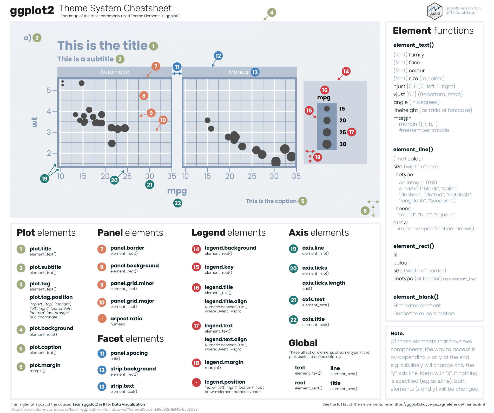

Section 7 Data Visualization et Ggplot2 : aspects théoriques
7.1 Présentation générale de Ggplot2
Le package ggplot2 (inclus dans le package tidyverse) est l’un des atouts de R et permet de réaliser de beaux graphiques ; vous en trouverez ici la présentation officielle. L’inconvénient, surtout pour quelqu’un qui serait habitué à construire des graphiques sous excel, est qu’il faut (presque) tout paramétrer, ce qui peut finalement donner un code très long.
L’architecture globale de ggplot2 est souvent représentée par le schéma ci-dessous :

Pour le lire, il faut partir du bas du schéma :
- par “Data”, nous devons d’abord préciser la base ou le tableau de données utilisé(e) qui contient la ou les variables qui seront représentées ;
- par “aesthetics”, nous allons ensuite indiquer les variables qui seront projetées sur le graphe ;
- par “geometries”, nous indiquons le type de graphique utilisé ou la forme géométrique ;
- par “facets”, nous pouvons éventuellement (facultatif donc) diviser ou découper le graphique en plusieurs graphes (ou “panneaux”) dépendant d’une autre variable par exemple ;
- par “statistics”, nous pouvons là aussi éventuellement ajouter des statistiques ;
- par “coordinates”, nous pouvons là aussi éventuellement changer le sens du graphique ;
- enfin, par “theme”, nous pouvons utiliser éventuellement l’un des thèmes graphiques diponibles et/ou ajouter un certain nombre d’options sur ce qui “entoure” le graphique, c’est-à-dire les positions et/ou couleurs et/ou taille, etc., des axes, titre, légende, etc.
7.1.1 Les “aesthetics” ou arguments esthétiques
Il s’agit principalement d’indiquer quelle variable sera utilisée en abcisse (x=), et laquelle sera éventuellement utilisée en ordonnée (y=).
Mais on peut aussi ajouter des variables supplémentaires qui seront différenciées par :
- couleur, avec
color=(pour des points, lignes ou symboles) oufill=(pour le contenu des bâtons ou symboles) ; - taille avec
size=; - symboles avec
shape=; - type de lignes avec
linetype=; - degré de transparence avec
alpha=(mais non conseillé pour les variables discrètes).
La nuance à bien comprendre est qu’utiliser ces options à l’intérieur de la fonction aes() revient à ajouter une 3ème variable (une légende apparaîtra alors automatiquement), alors que si l’on veut simplement changer l’aspect des points, lignes, barres, etc., d’une variable déjà projetée, il faut appeler (souvent) ces mêmes options après la fonction aes() à l’intérieur de la fonction geom_***() par exemple. Dans ce cas-là, on peut changer la couleur des points avec color= , la taille des points ou lignes avec size=, l’épaisseur des barres avec width=, etc.
C’est la différence entre le “mapping” et les “settings”.
Chacune de ces options ont des modalités différentes, il peut être bien d’avoir des mémos rangés dans un dossier créé pour cela pour éviter de les chercher à chaque fois.
Par exemple, pour les couleurs, vous trouverez un mémo pdf ici, ou un bon récapitulatif là. On peut également utiliser la fonction colours() dans R pour voir la liste complète des couleurs standard.
Pour la liste des symboles (“shape”) et le numéro correspondant que l’on appelera avec l’argument shape=, ci-dessous un récapitulatif :

Et voici pour la liste des types de lignes, avec linetype= :

7.1.2 Les géométries
Une fois les variables appelées, il faut définir le type de graphique. Il y a beaucoup de choix possibles inclus dans ggplot2, le tout est de bien comprendre quel type de graphique convient le mieux à ou aux variables utilisées et à ce que l’on veut montrer (cf. section suivante sur les grands principes de la data visualization). Voici un tableau récapitulant les principales “geometries”.
| Fonction | Type de graphique | Type de variable(s) |
|---|---|---|
geom_histogram() |
Histogramme | 1 variable continue |
geom_density() |
Courbe de densité | 1 variable continue |
geom_area() |
Graphique en aires empilées | 1 variable continue |
geom_col() |
Graphique en bâtons | 1 variable discrète |
geom_point() |
Nuage de points | 2 variables continues |
geom_jitter() |
Nuage de points dispersés | 2 variables continues |
geom_boxplot() |
Boîte à moustache | 1 variable continue, sans ou avec 1 variable discrète |
geom_violin() |
Graphes en violon | 1 variable continue, sans ou avec 1 variable discrète |
geom_bar() |
Graphique en bâtons | 1 variable continue, sans ou avec 1 variable discrète |
geom_line() |
Lignes | Fonction continue selon une variable de date |
geom_area() |
Graphique en aires empilées | Fonction continue selon une variable de date |
Certaines d’entre elles ont des options à préciser, presque de façon obligatoire comme nous l’avons déjà vu avec geom_histogram() et l’option bins=, si elle n’est pas précisée, elle sera “forcée” par R mais un message d’avertissement en rouge apparaîtra.
Il en existe bien sûr plein d’autres, il faut dans ce cas rechercher sur internet ou aller voir sur la “cheatsheet” de ggplot2 disponible sur internet.
Il est possible de faire suivre plusieurs fonctions geom_***() : par exemple un geom_line() après un geom_point(), un geom_text() après un geom_bar(), etc. Dans ce cas, des variables supplémentaires peuvent être ajoutées (ou remplacer les précédentes) avec une nouvelle fonction aes à l’intérieur de ce geom_***() ; un exemple assez courant est la construction d’un graphique en bâtons avec l’ajout des valeurs de la variable à l’intérieur des bâtons (ou juste au-dessus), on fera alors appel à deux fonction geom_***() comme ceci : data %>% ggplot() + aes(x=, y=) + geom_bar() + geom_text(aes(label=)). De même, il est possible de spécifier des données (data) différentes pour chaque geom_***() .
7.1.3 Les facettes
Il y a deux types de facettes (en réalité trois, avec celle par défaut qui s’intitule facet_null() et produit un seul graphe) :
facet_wrap(): produit une suite de graphiques et a un argument principalfacets=vars()et éventuellementncol=etnrow=;facet_grid(): produit une grille ou matrice de graphiques définies par une ou deux variables qui forment les lignes et les colonnes, définies avec les deux arguments principauxcols=etrow=, ou en indiquant un~entre les deux variables.
À savoir, il y a des options pour contrôler les échelles avec l’argumentscales=.
Les facettes sont ainsi une autre façon, par rapport aux “aesthetics”, de représenter deux variables par rapport à une troisième variable.
7.1.4 Les statistiques
On peut vouloir ajouter sur un graphique des statistiques particulières ou supplémentaires, comme la moyenne ou médiane d’une variable quantitative, ou encore représenter la régression linéaire dans le cas d’une variable fonction d’une autre, etc.
Par exemple, si l’on projette des boîtes à moustache, la moyenne n’étant pas affichée on peut la rajouter avec la fonction stat_summary() et l’option fun = mean.
Si l’on souhaite ajouter une régression linéaire sur un graphique de nuage de points, il faut utiliser la fonction geom_smooth() et l’option method=lm.
Certaines statistiques peuvent aussi être calculées ou transformées directement dans certaines fonctions : c’est par exemple le cas avec la fonction geom_histogramm() où l’on peut produire un histogramme de la densité en spécifiant y=..density.. dans l’aes() ou en la superposant à l’aide d’une courbe à l’histogramme initial en ajoutant alors ensuite un geom_density() ; ou encore avec la fonction geom_bar() avec les arguments stat = "summary_bin", fun = mean (par défaut, stat = "count", dans ce cas la hauteur des barres représente le comptage des cas dans chaque catégorie).
7.1.5 Les coordonnées
Les systèmes de coordonnées linéaires permettent de changer le sens du graphique ou de “zoomer” sur le graphique :
coord_cartesian(): c’est le système de coordonnées par défaut (repère “cartésien”), en changeant les argumentsxlim=ouylim=, on procède à un zoom sur l’axe des abscisses et/ou celui des ordonnées ; cela permet de ne pas supprimer des données comme le ferait les fonctionsscale_x_continuous()ouscale_y_continuousmais juste de ne pas les afficher sur le graphe ;coord_flip(): permet d’inverser les axes ;coord_fixed(): produit un système de coordonnées cartésiennes avec un “ratio d’aspect” fixe.
Il existe également des systèmes de coordonnées non-linéaires, comme coord_polar() par exemple.
7.1.6 Les thèmes
Il y a plusieurs thèmes existants dans le package ggplot2, theme_gray() est le thème par défaut ; les autres sont présentés dans la figure ci-dessous.

Ensuite, la fonction theme() permet de modifier les aspects du graphique : il y a un certain nombre d’arguments disponibles qui permettent de modifier les éléments entourant le graphique comme les titre et sous-titre, les éléments à l’intérieur du graphique c’est-à-dire de la grille, les éléments des axes, ou encore les éléments de la légende (ou sa position sur la figure), etc.
La figure ci-dessous est une bonne synthèse de la manière dont il faut programmer ces différentes éléments du thème d’un graphique (téléchargeable directement ici) :

7.1.7 Les autres options graphiques : titres, échelles des axes, etc.
Pour le titre général, mais aussi les titres des axes, ainsi qu’une éventuelle légende, source, etc., on peut les rassembler dans la fonction labs() :
Les axes des échelles peuvent être changés, ainsi que les valeurs affichées, avec les fonctions scale : si les variables sont quantitatives/continues, avec scale_x_continous() et scale_y_continuous() ; si les variables sont qualitatives/discrètes, avec scale_x_discrete() et scale_x_discrete() ; dont les options les plus souvent utilisées sont limits=, breaks=, labels=, ou encore trans= qui permet de transformer la mesure de l’échelle (exponentielle, log, …). Lorsqu’une option fill= ou color= est utilisée dans un aes, alors on peut modifier le type de couleurs ou palettes utilisées avec par exemple scale_fill_brewer() pour la pallette de couleur RBrewer ou scale_fill_viridis() pour la palette Viridis, etc.
Il y a encore d’autres fonctions qui permettent de “customiser” à votre goût un graphique ggplot, il faut s’aventurer dans les diverses documentations plus complètes sur le package ggplot2.
7.1.8 Code minimal
Après l’appel de la fonction ggplot(), chaque “couche” supplémentaire utilisée est précisée par le signe + et non l’habituel pipe %>% pour bien signifier qu’on est toujours dans la fonction ggplot(), par ailleurs il faut faire attention de mettre le signe + à la fin d’une ligne et ensuite de faire un saut de ligne (le contraire saut de ligne et début de la ligne suivante avec le + ne fonctionnera pas). Les trois arguments obligatoires sont donc les 3 premières : “data”, “aesthethics” et “geometries”. En langage tidyverse, il existe plusieurs façons d’écrire le code :
# Les 4 façons d'écrire suivantes sont similaires :
data %>% # on spécifie la table de données
ggplot() + # on appelle la fonction ggplot()
aes(x = , y = ) + # on spécifie dans l'aes() les variables à mettre dans l'axe
# des abcisses (x=) et dans l'axe des ordonnées (y=)
geom_histogram() # on trace l'histogramme
data %>% ggplot(aes(x = , y = )) + geom_histogram()
ggplot(data) + aes(x = , y = ) + geom_histogram()
ggplot(data, aes(x = , y = )) + geom_histogram()Nous privilégierons ici la 1ère d’entre elles, mais vous pouvez en choisir une autre !
7.2 Les grands principes de data visualization
Sans prétendre, ni pouvoir, faire un cours complet de data visualization, voici quelques grands principes à essayer de respecter quand on souhaite représenter graphiquement des résultats issus du traitement de données :
- savoir au préalable le message principal que l’on souhaite faire passer : cela peut sembler évident, mais il faut toujour avoir cela en tête ;
- construire un graphique intelligible par le plus grand nombre : des graphiques trop sophistiqués, trop chargés d’informations, etc., ne permettront pas de transmettre le message souhaité. Cela peut bien sûr varier selon le public, mais… ;
- situer le graphique : avec un titre explicite, éventuellement un sous-titre, ensuite avec une légende reprenant le champ et/ou la source, etc. ;
- choisir le “bon” graphique selon le type de variables à représenter : variable continue ou discrète, croisement d’un type de variable avec un autre type, variables dépendant du temps (évolution), etc. ;
- présenter le graphique de manière la plus objective possible : ne pas “tordre” le graphique pour faire apparaître un résultat qui n’est pas si évident que cela (c’est typiquement l’exemple d’un changement d’échelle ; d’un “zoom” sur l’axe des ‘y’ sur un graphique en évolution par exemple, pour montrer des variations qui ne seraient pas visibles si l’axe commençait à 0) ;
- rajouter des informations (étiquettes de nom, valeur, etc.) sans trop surcharger le graphique néanmoins ;
- être logique dans la contruction des éléments extérieurs au graphe : par exemple, ordre des modalités d’une légende située à droite selon le point d’arrivée des courbes ; ordre des modalités d’une variable discrète (par exemple le niveau de diplôme) ou selon la moyenne/médiane d’une autre variable par ordre croissant ou décroissant ; utiliser (le plus possible) des axes similaires pour comparer deux grahes côte à cote.
Ce chapitre de cours donne des conseils synthétiques : cf. ici ; ou cet article-là.